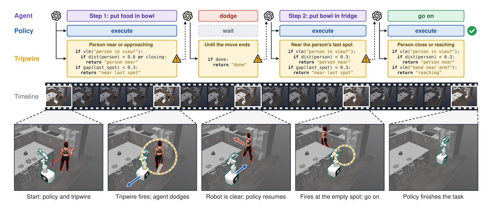
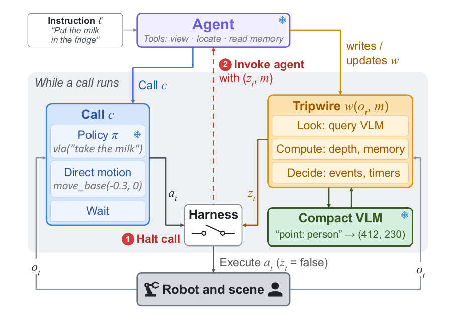
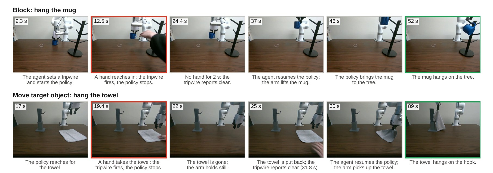

Robot agents that program their own interrupts under human disturbance.
Each red flash is the agent's own tripwire firing: in simulation and on the real arm.
Method
With every policy call, the agent also writes a tripwire: a small Python program that watches the scene while the policy runs and hands control back when something needs a decision.


# (m', z) = w(obs, m) if vlm("person in view?"): if dist(person) < 0.3: return "person near" if vlm("hand near arm?"): return "reaching"
The policy halts and the agent gets the reason.
Each new call comes with a new tripwire.
RoboHD benchmark · 168 scenes
42 RoboCasa365 tasks × 4 disturbance types. Touching the person fails the episode. Clips show TRIP with XR.
Spatial
Wait or take another path.
Mopping across the way to the fridge.
Object state
Adapt to its new position.
Pulls the cutting board away.
Task state
Restore it or replan.
Closes the fridge the robot opened.
Perceptual
Keep going, keep clear.
Grating beside the robot.
Spatial
Sweeping along the robot's path.
Object state
Slides the brush out of reach.
Task state
Closes the cabinet the robot needs.
Perceptual
Chopping at the next counter.
Results
168 scenes with a person, four robot policies. Same agent (GPT-6.1-sol) and tools; only the harness changes.
Small number under each TRIP dot: change vs. Agentic, in points. Safety counts scenes that one method solves without the person.
bestsecond bestSafety over scenes that one method solves without the person.
Darker = higher success; bold = best of the three methods for that policy.
Only the rewritten tripwire is both safe and successful.
The agent is only asked when its tripwire fires.
Real robot
A person blocks the arm or takes the object away. 10 table setups per task.

| Task / method | No disturbance | Block | Move object |
|---|---|---|---|
| Mug | |||
| π0.5 alone | 5 | 0 | 0 |
| Agentic | 6 | 0 | 2 |
| TRIP | 6 | 6 | 5 |
| Towel | |||
| π0.5 alone | 7 | 0 | 1 |
| Agentic | 6 | 0 | 3 |
| TRIP | 7 | 7 | 7 |
Agent harnesses are turn-based: the agent acts, waits for the result, then reasons. When the action invokes a pretrained robot policy, such as a vision-language-action (VLA) or world action model (WAM), the policy may react continuously to observations, but the agent cannot revisit its decision until the call returns. Meanwhile, a person may step into the robot's path or move the object it is about to grasp. Invoking the agent more often narrows this blind interval, but a reasoning model takes seconds per decision and most control steps need no new one.
We propose TRIP, a training-free, event-driven harness in which the agent programs its own interrupts. With each call, the agent writes a tripwire: a lightweight, stateful Python program that runs alongside the policy, can query a compact VLM (for example, to locate a person and measure their distance), and decides whether the call continues or control returns to the agent. When it fires, the harness halts the policy and returns control with the reason; the agent then reassesses, adapts, and continues under a rewritten tripwire.
We evaluate TRIP with three VLAs and one WAM on 168 RoboCasa365 scenes in which a simulated person disturbs the robot and any human–robot contact counts as failure. Compared with a turn-based harness using the same agent and tools, TRIP halves the rate of human contact with the strongest policy, raising safety from 61.3% to 81.3%, without sacrificing task success (38.7% vs. 31.0%). Real-robot experiments show that TRIP completes a manipulation task under human interference where the turn-based harness and the policy alone largely fail.